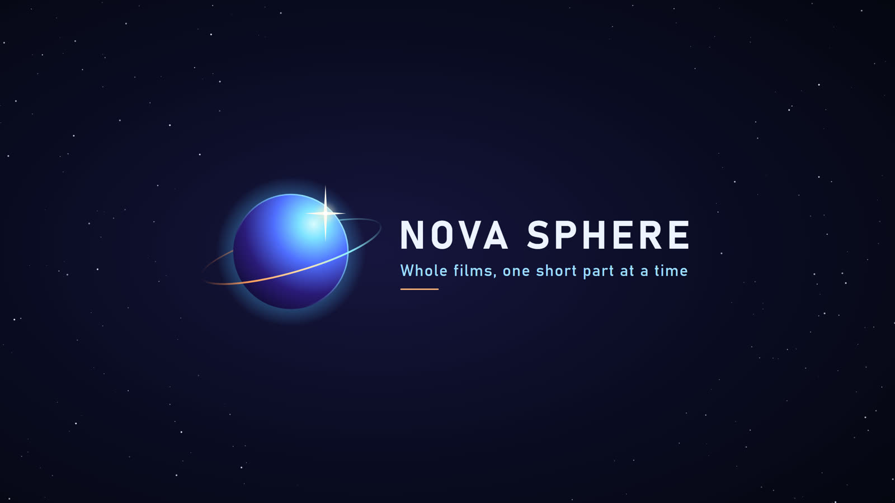

Whole films, one short part at a time.
Nova Sphere cuts free, open-licence films (Creative Commons) into short vertical parts you can watch in about a minute, and posts them in order on Instagram and YouTube Shorts. Every part credits the film's makers and its licence.
Numbered parts
Each film is split at quiet scene changes, so nobody is cut off mid-sentence. A title card opens every part.
Only free films
Only films whose licence allows sharing, such as Blender's open movies (Big Buck Bunny, Sintel, Tears of Steel, Elephants Dream).
Always credited
Every caption and description names the film, its makers, the licence and the changes made (cut into parts, reframed, titles added).
How Nova Sphere publishes
Nova Sphere's own publishing tool prepares each part on the owner's computer and uploads it to Nova Sphere's own Instagram account and YouTube channel, after the owner approves it or switches on automatic posting. To upload to YouTube it uses Google sign-in with two permissions for the Nova Sphere channel only: upload videos, and read the channel's own details and view counts. It does not read anyone else's data. See the privacy policy.